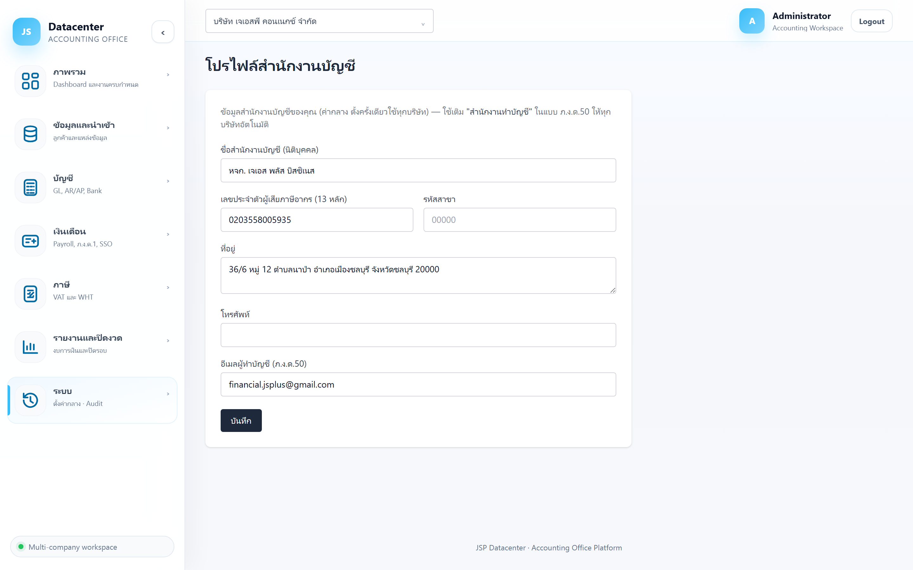

คู่มือการใช้งาน › ระบบ › โปรไฟล์สำนักงานบัญชี
โปรไฟล์สำนักงานบัญชี
ข้อมูลของ สำนักงานบัญชีของคุณเอง (ไม่ใช่ของลูกค้า) — ใช้พิมพ์ลงแบบภาษีในช่อง “สำนักงานทำบัญชี” และเป็นค่าตั้งต้นของทุกบริษัทลูกค้า
ตั้งครั้งเดียว ใช้ทุกบริษัท
ข้อมูลชุดนี้เป็น ค่ากลางของสำนักงาน — ตั้งครั้งแรกครั้งเดียวแล้วทุกบริษัทลูกค้าใช้ร่วมกัน ต่างจาก เมนูลูกค้า ที่เป็นข้อมูลรายบริษัท
1. การเข้าใช้งาน
เปิดเมนู ระบบ → โปรไฟล์สำนักงานบัญชี (ไม่ต้องเลือกบริษัท)
2. ช่องข้อมูล

| ช่อง | คำอธิบาย |
|---|---|
| ชื่อสำนักงานบัญชี (นิติบุคคล) | ชื่อเต็มตามหนังสือรับรอง — พิมพ์ลงช่อง “สำนักงานทำบัญชี” ในแบบภาษี |
| เลขประจำตัวผู้เสียภาษีอากร (13 หลัก) | เลขผู้เสียภาษีของสำนักงาน |
| รหัสสาขา | สำนักงานใหญ่ใช้ 00000 |
| ที่อยู่ | ที่อยู่ตามทะเบียนของสำนักงาน |
| โทรศัพท์ | เบอร์ติดต่อที่ใช้ในแบบ |
| อีเมลผู้ทำบัญชี (ภ.ง.ด.50) | อีเมลผู้ทำบัญชีที่กรอกในแบบ ภ.ง.ด.50 — สรรพากรใช้ติดต่อกลับ |
กด บันทึก เมื่อแก้เสร็จ — ถ้าข้อมูลไม่ถูกต้องจะขึ้น “บันทึกไม่สำเร็จ — ตรวจข้อมูล”
3. ข้อมูลนี้ถูกใช้ที่ไหนบ้าง
| ใช้ที่ | ใช้อย่างไร |
|---|---|
| ภ.ง.ด.50 | ช่อง “สำนักงานทำบัญชี” ในการ์ดผู้ลงนามดึงจากที่นี่ |
| ไฟล์ PDF แบบภาษี | ชื่อ เลขผู้เสียภาษี และที่อยู่ของสำนักงานถูกพิมพ์ลงแบบ |
| เอกสารที่ออกให้ลูกค้า | ใช้เป็นข้อมูลสำนักงานผู้จัดทำ |
แก้แล้วมีผลกับทุกบริษัททันที
เป็นค่ากลาง — เอกสารที่ออกหลังจากนี้ของลูกค้าทุกรายจะใช้ค่าใหม่ (เอกสารที่ออกและเก็บไฟล์ไว้แล้วไม่เปลี่ยน)
4. ปัญหาที่พบบ่อย
| อาการ | สาเหตุและวิธีแก้ |
|---|---|
| ช่องสำนักงานทำบัญชีใน ภ.ง.ด.50 ว่าง | ยังไม่ได้กรอกโปรไฟล์นี้ |
| บันทึกไม่สำเร็จ | ตรวจว่าเลขผู้เสียภาษีครบ 13 หลัก และรหัสสาขาเป็นตัวเลข 5 หลัก |
| ชื่อสำนักงานพิมพ์ผิดในเอกสารเก่า | แก้ที่นี่แล้วออกเอกสารใหม่ — ไฟล์เดิมที่บันทึกไว้แล้วไม่เปลี่ยนตาม |